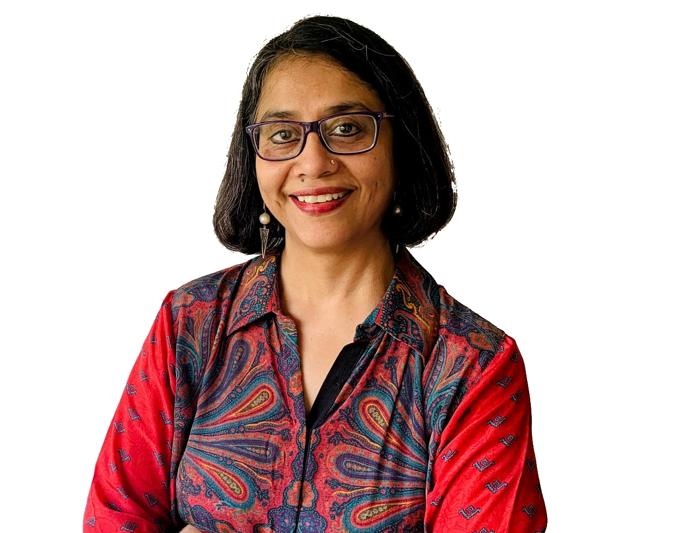
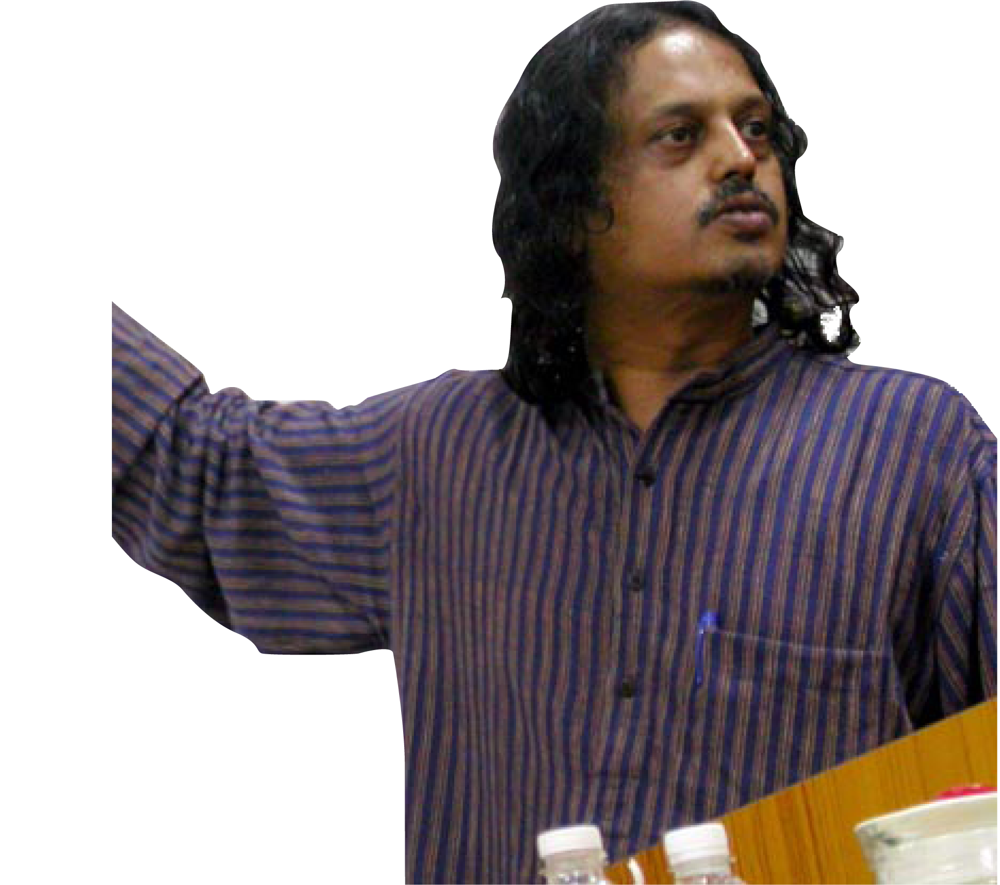
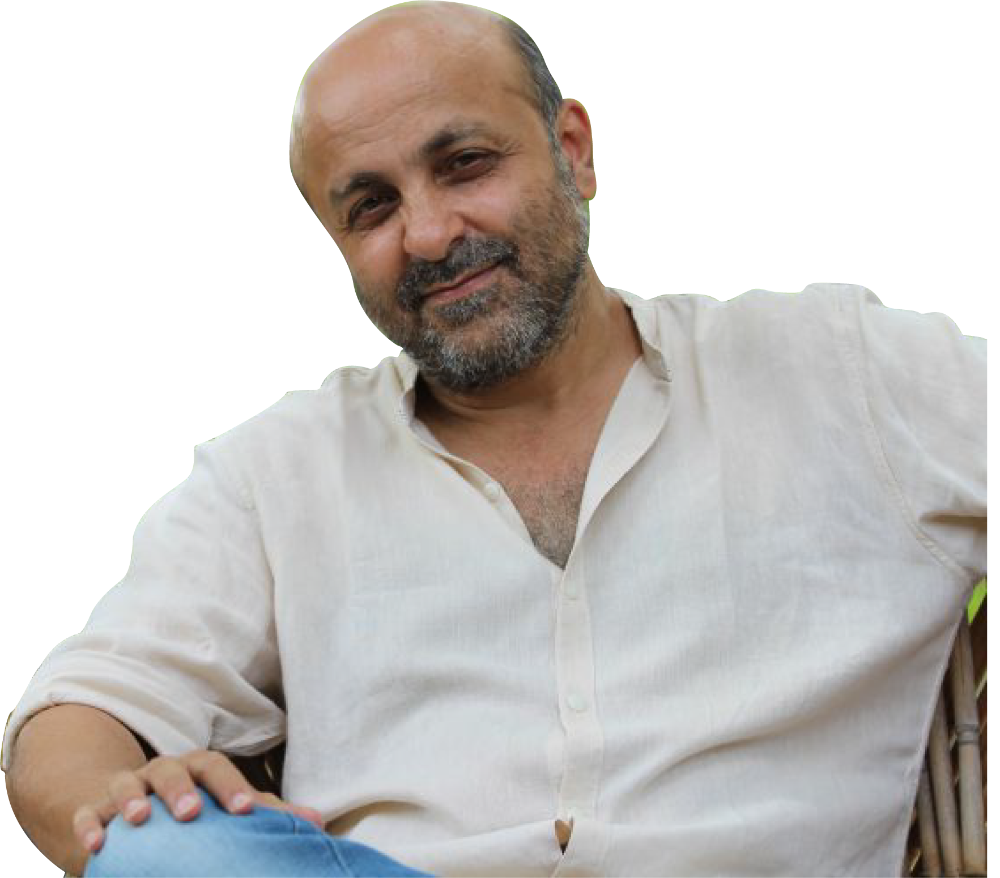
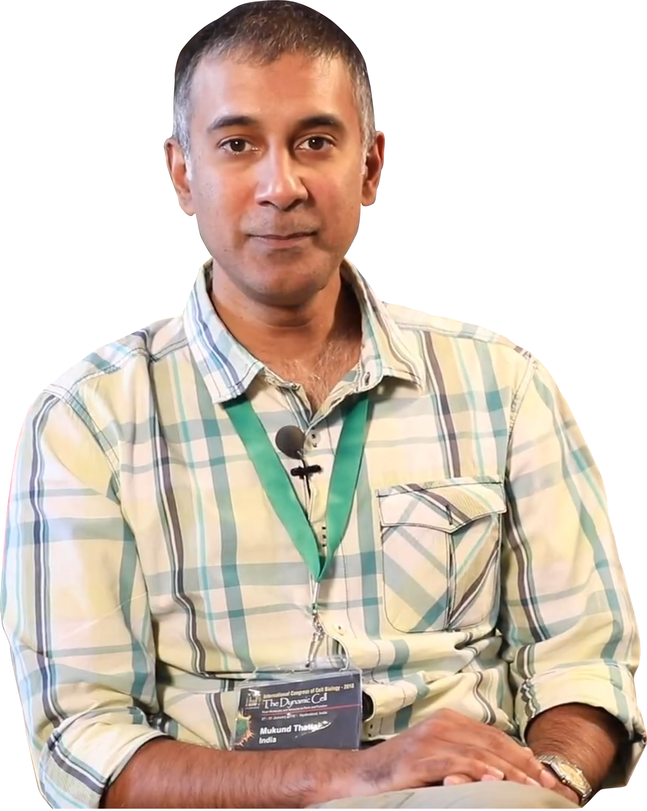
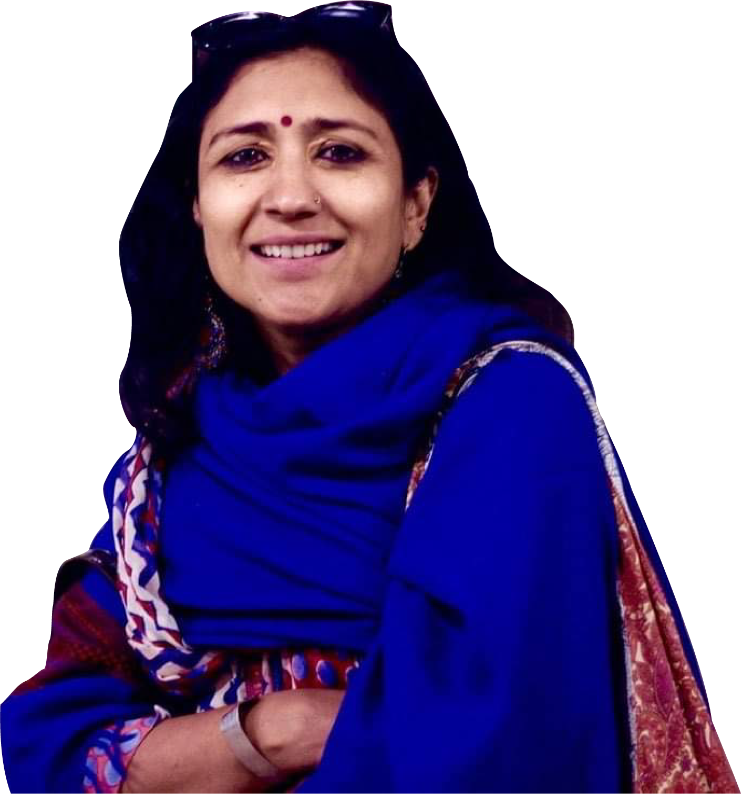
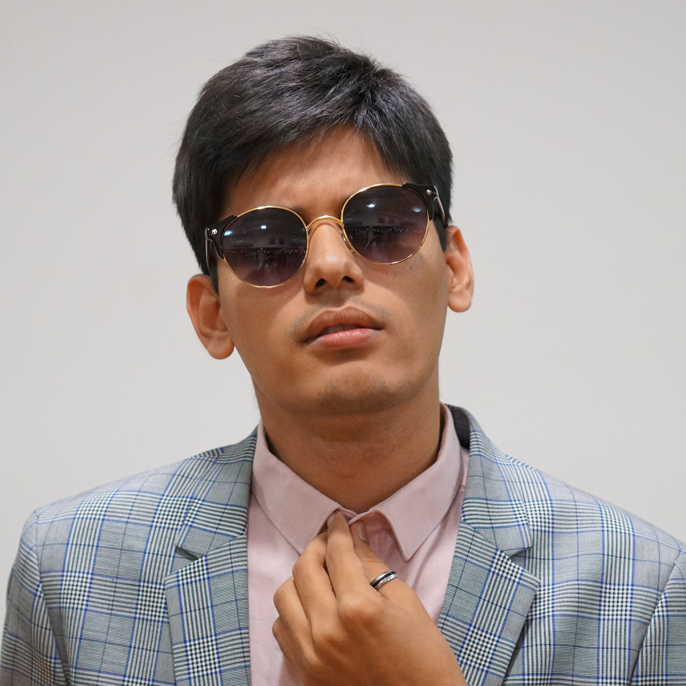

Meet speakers of tedxIISERPune 2021

Anuradha Kapoor
Anuradha is an activist, gender trainer and an eloquent speaker. She has consulted many women and human rights organizations, academic institutions, and UN agencies. She is also the founder and director of Swayam, a non-profit feminist organization committed to advancing women's rights and ending gender inequality and violence against women. She has co-authored numerous articles, research, and manuals on the issue of violence against women.K VijayRaghavan
Prof. Krishnaswamy VijayRaghavan FRS is an emeritus professor in the field of Developmental Biology and was the former director of the National Centre for Biological Sciences, Bengaluru, India. He currently serves as the 3rd Principal Scientific Advisor to the Government of India. He has received several honours for work from his group, some of which include the Padma Shree award, the Shanti Swarup Bhatnagar award and the Infosys prize in Life Sciences.

Sundar Sarukkai
Sundar Sarukkai is a philosopher of the natural and the social sciences. He has been actively involved in taking philosophy to different communities and conducting philosophy workshops for children through his initiative of the Barefoot Philosophers. His latest book, Philosophy for Children: Thinking, Reading and Writing, is being published in English, Hindi, Tamil, Kannada, Malayalam, and Bengali. He is currently a Visiting Faculty at the Centre for Society and Policy, Indian Institute of Science, Bangalore.Thomas Talhelm
Thomas Talhelm is a Associate Professor of Behavioral Science at the University of Chicago Booth School of Business and the founder of Smart Air, a social enterprise that provides a low cost and effective alternative to expensive air purifiers. Thomas’s work with Smart Air has helped people across the world breathe clean better and has made clean air more accessible and affordable to the masses.

Brahmanand S Siingh
Brahmanand Siingh is a two-time National Award winning filmmaker, a vastly published author, and a life coach. With films that have touched international audiences; more than 3000 published pieces in print and web; and a multidimensional approach to looking at life and living, Mr. Siingh has touched the lives of million across the globe.Ajit Mapari
Dr. Mapari is the founder of Fit2Sport, a state-of-the-art sports specialty clinic in Pune. His area of work includes injury prevention & management, sports-specific fitness guidance, and program execution; providing related services to sports events. With his expertise, he has guided many national and international athletes and professional sports teams along with recreational and fitness enthusiasts.

Mukund Thattai
Mukund Thattai is a renowned professor of biology at NCBS, Bangalore. Initially starting as a physicist, his fascination took him into biology, and he often refers to himself as an "accidental biologist". He explores the theoretical concepts of biology using mathematical modelling and in-silico methods.Priya Abraham
Dr. Priya Abraham is a clinical virologist and the Director of the National Institute of Virology in Pune. Previously a Professor in the Department of Virology at Christian Medical College in Vellore, she was invited to take up the reins of the institute by virtue of her outstanding work in the field of virology. She was appointed two months before the first COVID-19 cases were reported in India, putting her in the hot seat since then.

Vidhi Jain
Vidhi Jain, an eminent learning activist, is the co-founder of Shikshantar- a movement to challenge the culture of schooling in India. She is currently engaged in working with the Families Learning Together and Unschooling initiatives and is deeply passionate about the slow food movement.Performers
Jnana Aithal
Dancer
